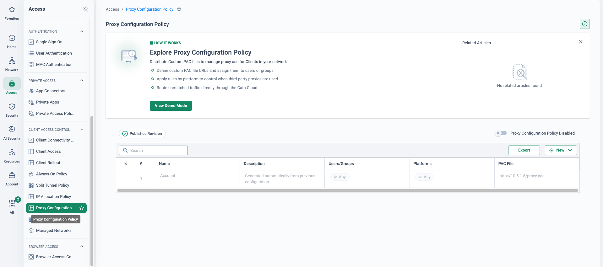

Why this migration is on the table
This page is built from public research (July 2026), not a delivery-verified runbook. Review the plan with Cato Professional Services — and verify any Forcepoint lifecycle claim against the customer's own support-portal notices — before using it in a customer engagement.
Forcepoint has publicly repositioned itself as an AI-powered data-security company. The moves are on the record: the Global Governments and Critical Infrastructure (G2CI) business was sold to TPG (completed October 2023, rebranded Everfox); Getvisibility (DSPM) was acquired in March 2025; and in April 2025 Forcepoint launched Forcepoint Data Security Cloud — with the former Forcepoint ONE SSE documentation now branded "Forcepoint Data Security Cloud | SSE".
None of that is an end-of-life announcement for the web security or NGFW products — do not claim one you cannot cite. The pressure is strategic, and it is best raised as questions the customer should ask their account team: where do a proxy-heritage web stack and a Stonesoft-heritage firewall estate sit in a data-security-first roadmap? What is the investment trajectory for Content Gateway, SMC and the NGFW line? Which appliance models in our estate already have EoS/EoL notices on the support portal? Where the customer holds a model-level NGFW notice in hand, that is the concrete, citable trigger.
The operational case stands on its own: PAC files and GPOs to maintain, proxy-embedded authentication, separate consoles for web, firewall and SSE (the ex-Bitglass Forcepoint ONE stack), and appliances to patch and refresh. Cato replaces the steering, web security, firewalling and remote access with one cloud platform and one console — while being honest that Forcepoint's endpoint DLP depth may deserve to stay.
"Which Forcepoint products are actually deployed — cloud web security, Content Gateway, Forcepoint ONE, NGFW/SMC, DLP, email — when does each contract renew, and do you have any appliance EoS/EoL notices in hand?" The answers shape everything below.
What maps to what
Steering is the fundamental difference. Forcepoint web security is explicit — a PAC file or proxy setting decides what reaches it, and only proxied web ports are inspected. Cato is transparent — the Cato Client steers users and the Socket/IPsec tunnel steers sites, and every port and protocol is inspected at the PoP. That difference is also what makes co-existence clean (see below).
| Forcepoint component | Cato equivalent | Notes |
|---|---|---|
| Web Security Cloud / on-prem Content Gateway | Cato SWG / Internet Firewall | Transparent Client/Socket steering — no PAC or explicit-proxy settings to maintain; all ports and protocols inspected. |
| Category / URL policy (Websense categories) | Internet Firewall rules — categories, custom categories, apps, FQDNs | Websense "quota/confirm" maps to Cato Prompt; time-based quota browsing has no direct equivalent — validate per policy. |
| Content Gateway TLS decryption | Cato TLS Inspection | Wizard-driven, single-pass at the PoP; Cato CA on devices; gradual rollout by category; block QUIC so traffic is inspectable. |
| Forcepoint ONE SWG/CASB/ZTNA (ex-Bitglass) | Cato SSE 360 — SWG + CASB (inline & API) + ZTNA | One policy engine and console instead of a bolted-on acquisition; shadow-IT dashboards, app risk scores, GenAI app catalogue. |
| Forcepoint DLP — network & cloud channels | Cato DLP (Data Control policy + Content Profiles) | 350+ predefined data types, custom regex/keyword types, Exact Data Matching (EDM), MIP sensitivity labels, OCR on images. |
| Forcepoint DLP Endpoint agent | No direct equivalent | USB, print and clipboard channels are endpoint-enforced — retain the agent where mandated; Cato device posture can require it running. |
| Forcepoint DLP Discover / DSPM | No Cato equivalent | Data-at-rest discovery is out of SASE scope — position Cato as the data-in-motion layer alongside a data-at-rest tool. |
| NGFW (ex-Stonesoft) + Secure SD-WAN | Cato Socket + FWaaS (Internet & WAN Firewall), IPS, NGAM, Cato SD-WAN | Firewalling and threat prevention move to the PoP; SMC templates flatten into CMA ordered rulebases — rationalise, don't lift-and-shift. |
| SMC (Security Management Center) | Cato Management Application (CMA) | Single console and API — no separate manager to host, patch or license. |
| NGFW VPN client / legacy SSL VPN | Cato ZTNA via the Cato Client | Identity + MFA + continuous device posture; Always-On prevents bypass; clientless browser access for third parties/BYOD. |
| Cloud proxy egress IPs (allowlisted by SaaS/partners) | Cato allocated egress IPs | 3 allocated IPs included per account (more purchasable); egress rules pin traffic per app — migrates third-party allowlists. |
| Forcepoint Email Security | No native equivalent | Scope out explicitly — keep or replace separately (e.g. M365-native email security and DLP). |
Forcepoint enterprise DLP has real depth Cato's network DLP does not replicate: N-gram document fingerprinting, trainable ML classifiers, an OCR server with language packs, endpoint channels (USB, print, clipboard) and data-at-rest discovery. Do not contest it — reframe the scope. Cato enforces DLP inline on all traffic crossing the PoP, not just proxied web ports; the recommended design is a hybrid that keeps the Forcepoint endpoint agent wherever endpoint-channel mandates exist, with Cato device posture confirming the agent is running before granting access.

Five phases, each independently reversible
The sequence follows the Cato Professional Services methodology — discovery and design, parallel build and pilot, then phased cutover of users and sites, closing with optimise and decommission. Policy work follows the PS pattern: export → review & map → deploy → optimise.
-
Discovery & design — inventory the steering layer and rationalise DLP first
Document every PAC file and its GPO distribution points, policy-specific PAC URLs, WPAD, proxy settings hardcoded in apps and build tooling, and Content Gateway transparent-mode hooks (WCCP/policy routing) — the PAC estate is the rollback lever. Find proxy-embedded authentication: NTLM/Kerberos proxy auth and X-Authenticated-User headers consumed downstream — in Cato, identity comes from the Client and IdP integration, so every consumer needs an identity path. Enumerate egress-IP-pinned allowlists (SaaS tenant restrictions, conditional access, partner firewalls) for replacement with Cato allocated IPs.
Rationalise DLP before mapping: age out unused policies, then classify what remains — dictionary/regex/predefined classifiers map directly to Cato data types; structured fingerprints re-implement as EDM; unstructured document fingerprints and ML classifiers have no direct equivalent — redesign around data types/EDM/MIP labels or explicitly retain Forcepoint for those policies. Decide the endpoint-DLP hybrid now, not at cutover.
-
Pilot & parallel build — sockets alongside, certificate ahead of need
Security → TLS Inspection
Deploy Sockets/IPsec at pilot and hub sites in parallel with the existing NGFW/proxy egress — Cato carries traffic while Forcepoint still enforces web policy for everyone else. Roll the Cato CA certificate out fleet-wide before it is needed, then enable TLS Inspection gradually — test group first, expanding by URL category — with QUIC blocked via the Internet Firewall. Switch CASB discovery and DLP to monitor mode early and reconcile DLP monitor events against Forcepoint incidents before any enforcement.
-
User cutover — remove the PAC cohort by cohort, Always-On Client in
Access → Client Connectivity Policy
Per cohort: remove or modify the PAC via GPO, enable the Cato Client with Always-On, and confirm nothing still steers web traffic to Forcepoint. Run weekly waves with tuning in between. Cato's Proxy Configuration Policy can centrally serve a transitional PAC for stragglers that still need one. Repoint SaaS tenant restrictions and partner allowlists to Cato allocated egress IPs before the owning cohort flips.
-
Site cutover — retire NGFW and Content Gateway in sequence
Network → Sites
Cut each site's internet breakout to the Socket and Cato PoP; retire the local NGFW and Content Gateway once WAN and internet policy are confirmed on Cato, converting temporary routed-range designs to VLAN termination as firewalls come out. Retire the NGFW VPN gateway per region once its user population is on Cato ZTNA — keep it dark-standby until sign-off.
-
Optimise & decommission — aligned to contract end-dates
Monitor → Events
Event-driven tuning across firewall, TLS, CASB and DLP; convert agreed DLP policies from monitor to block in stages. Decommission the Forcepoint cloud tenant, Content Gateway/V-Series appliances, SMC and NGFW estate and VPN gateways; reclaim GPO objects and PAC hosting. Forcepoint licensing is non-cancellable with reinstatement fees for lapsed support — so time non-renewal to the last cutover wave and align the plan to the contract end-date, not vice versa. Re-evaluate the DLP hybrid: if endpoint-channel and discovery mandates persist, keep a deliberately scoped endpoint-DLP licence, with Cato enforcing everything in motion.
Two steering planes that don't collide
This pairing co-exists unusually cleanly. Forcepoint's steering is explicit — the PAC decides what reaches it; Cato's is transparent — the Client and Socket own the path. The two planes are independent, so both platforms run in parallel without conflict: un-migrated cohorts keep the PAC pointing at Forcepoint (cloud or Content Gateway) while migrated cohorts steer transparently to the Cato PoP, where Internet Firewall, SWG, TLS and DLP policy now apply.
One TLS inspection owner per cohort — never decrypt the same flow twice. While a cohort's web traffic still terminates at Forcepoint, bypass Cato TLS Inspection for that cohort (or scope Cato TLSi to migrated cohorts only), and flip inspection ownership at cutover. Rebuild the certificate-pinned app bypass list on the Cato side from the Forcepoint bypass list — do not assume the two are identical.
Independent steering planes
Explicit PAC steering and transparent Client/Socket steering never fight over the same flow — both platforms run in parallel for as long as the waves need.
Rollback is a config event, not a project
Reinstate the PAC/GPO for the affected cohort, relax Always-On for that group, and traffic returns to Forcepoint at the next policy refresh.
Policy-frozen fallback
Keep the Forcepoint tenant and appliances licensed and policy-frozen until final sign-off — and freeze parallel edits on both platforms during waves to avoid drift.
No protection gap on data
Cato DLP runs in monitor then block on data in motion, while the Forcepoint endpoint agent keeps covering USB, print and clipboard throughout.
Where this migration bites — and what to say
"Forcepoint DLP is deeper than Cato DLP"
Partly true — don't contest it, reframe scope. Map each actually used policy (most estates run far fewer than they own): structured fingerprints → EDM; unstructured fingerprints and ML classifiers → redesign or retain hybrid. Test Cato's OCR limits (image formats, 10 KB–50 MB, no OCR with EDM profiles) against real policies in the pilot — never assert them.
Endpoint DLP channels
Cato enforces DLP at the PoP on traffic in motion — it is not an endpoint DLP agent. Regulated industries often have hard USB/print/clipboard mandates: lead with the hybrid design, not a swap, and use Cato device posture to require the endpoint agent before granting access.
Proxy-embedded authentication
NTLM/Kerberos proxy auth and X-Authenticated-User headers disappear when the proxy does. Identity moves to the Cato Client + IdP (SCIM/SSO) — anything downstream that reads proxy headers needs a redesign in phase 1, not a mapping.
PAC stragglers & hardcoded proxies
Apps and build tooling with hardcoded proxy settings keep sending traffic to a proxy that no longer exists. Sweep for them in discovery; Cato's Proxy Configuration Policy can serve a transitional PAC — the final state is no PAC at all.
SaaS & partners pinned to proxy egress IPs
Cutover silently breaks tenant restrictions, conditional access and partner allowlists keyed to Forcepoint egress ranges. Enumerate them in phase 1 and move each to Cato allocated egress IPs (per-app egress rules) before the owning cohort flips.
Quota / confirm browsing actions
Websense-era time-quota browsing has no like-for-like Cato action. Cato Prompt (warn-and-continue) covers the common intent — validate policy-by-policy rather than promising parity.
"Forcepoint says nothing is EOL"
Largely true for the cloud and DLP products — the pressure is strategic, not contractual: the data-security pivot, G2CI divested to Everfox, and console/agent fragmentation across ONE and the legacy stacks. Never claim an EOL you cannot cite; a model-level NGFW EoS notice the customer holds is the concrete trigger.
Email security is out of scope
Cato does not replace Forcepoint Email Security — scope it out explicitly and pair with M365-native or a dedicated vendor. Regulated customers should also map DLP incident export (Cato events → SIEM/SOAR) early and run both incident streams in parallel during monitor mode to build auditor confidence.
How to prove it in the customer's tenant
Don't PoV the whole displacement — PoV the thing this migration turns on: proxy retirement. The pilot takes one cohort off PAC/explicit-proxy steering and onto Cato transparent steering, proves a slice of web-category policy at parity in monitor mode, maps a deliberately bounded slice of the DLP estate, and stages TLS inspection for that cohort only — while every Forcepoint appliance and the tenant itself stay untouched. It is phases 2–3 of the path above in miniature, and the dual-steering-planes co-existence is the honest frame: un-migrated cohorts keep their PAC pointing at Forcepoint for the whole pilot. Run it under the discipline of the PoV framework — success criteria agreed before anything is configured, and the decision meeting booked the same day.
Success criteria
Every row's artefact goes into a dated evidence pack, exported as it lands — the wrap-up reads the pack, not memories.
| Success criterion | Evidence artefact | Where it lives |
|---|---|---|
| The cohort is off the PAC — every pilot user steers transparently via the Cato Client (or the pilot branch Socket) and is identified by name at the PoP, with no proxy setting left on the device | Connected cohort list plus one policy event attributed to each named user | Access → Users · Monitor → Events |
| Web-category parity — the agreed test list of blocked and Confirm categories returns the same verdicts on Cato (Block / Prompt) as Forcepoint's policy did for the same users | Side-by-side hits: Cato event export next to the matching Forcepoint Web Security report lines | Monitor → Events + exported Forcepoint reports |
| The bounded DLP slice matches — mapped direct-map classifiers raise Cato monitor events for the same test actions Forcepoint's incident manager records | Reconciliation sheet: Cato Data events vs Forcepoint incidents for the same test files | Monitor → Events · Monitor → Data Protection Dashboard |
| Co-existence intact — every non-cohort user keeps steering to Forcepoint via the PAC throughout, and no appliance, tenant or Forcepoint policy change is made | Policy-freeze note on both platforms; zero non-cohort identities in pilot events; zero non-cohort incidents | Monitor → Events + the change log |
| No user-reported degradation — cohort experience holds through the pilot weeks with no cohort-raised tickets | Experience Monitoring per-user scores and TTFB for the pilot weeks, plus the helpdesk queue | Monitor → Experience Monitoring |
- Success criteria signed off and the decision meeting booked, per the PoV framework.
- Trial licences confirmed for every capability under test — the DLP module and TLS inspection are both in scope here.
- IdP integration connected, with a dedicated pilot group provisioned over SCIM and visibly syncing before any rule references it.
- TLS inspection staged first — certificate out, bypasses in, then inspection — because category fidelity and the DLP slice both depend on it (see TLS Inspection: Staged Rollout Playbook).
- The DLP slice rationalised before mapping, per Forcepoint Policy Migration: direct-map classifiers only (predefined patterns, regex, dictionaries). Fingerprints, ML classifiers and endpoint channels are the migration's hybrid conversation — not this pilot.
- Scope is steering + policy parity for one cohort of 10–25 users across two archetypes — an office group at a branch and a handful of remote workers. Content Gateway, the NGFW/SMC estate and every VPN gateway stay untouched; no site cutover happens in this pilot.
- The cohort's PAC/GPO distribution documented before the flip — it is the rollback lever.
Configuration walkthrough
-
Pick the cohort, document its PAC path, export the parity references
Access → Users
Provision the pilot IdP group and confirm SCIM has synced it. On the Forcepoint side, document exactly how the cohort gets its PAC today — which GPO, which PAC URL, any WPAD — because that GPO is both the flip and the rollback. Then export the parity references: the cohort's category-hit report from Forcepoint Web Security and the same users' DLP incident history. Everything the pilot produces is judged against these two exports.
-
Translate the web-category slice — monitor-first
Security → Internet Firewall
Recreate only the category rules the cohort actually hits, scoped to the pilot group as source: Block stays Block for the agreed test list, Confirm becomes Prompt, and Track = Event on every rule — events are the evidence. The Internet firewall ends in an implicit any-any allow, so unmatched traffic simply flows — port the slice, not the policy. Everything outside the test list runs watching until its events prove it. Construct-by-construct detail: Forcepoint Policy Migration.
-
Map the bounded DLP slice — and re-prove the thresholds
Security → DLP Configuration
Build content profiles from predefined data types for the two or three surviving direct-map policies — PCI patterns and regional PII are the usual candidates — porting regex and dictionary classifiers as custom data types. Match thresholds are tuned differently on each platform, so re-prove them against known samples rather than copying Forcepoint's severity settings. Attach the profiles to Data Control rules scoped to the pilot group on upload activity — tracking events, never blocking, for the whole pilot.
-
Stage TLS inspection for the cohort only
Security → TLS Inspection
Deploy the Cato root certificate (downloadable from CMA) to cohort devices through GPO/MDM, then add an Inspect rule scoped to the pilot group — bypasses first. Certificate-pinned applications must be bypass rules, and Cato bypasses Android, Linux and unidentified operating systems automatically; treat Content Gateway's decryption exception list as a clue, not a config. Block QUIC in the Internet Firewall so cohort traffic stays inspectable. Without this step, neither category fidelity nor the DLP slice can reach parity.
-
Flip the cohort's steering — PAC out, transparent in
Access → Client Connectivity Policy
In one change: remove the PAC/proxy-enforcement GPO for the cohort OU and enable the Cato Client with an Always-On rule scoped to the pilot group. Where the pilot branch already carries a Socket from the parallel build, the office archetype steers through it with no endpoint change at all — that is the transparent-steering story on one slide. Confirm no browser on a pilot device still shows a proxy; for a straggler that genuinely needs one, Cato's Proxy Configuration Policy can centrally serve a transitional PAC to Windows, macOS and iOS clients. Everyone outside the cohort keeps the old GPO and keeps steering to Forcepoint — two planes, no collision.
-
Run the parity fortnight and build the evidence pack
Monitor → Events
Walk the agreed test list with a cohort user — Priya browses the blocked and prompted categories, then uploads the agreed test files to a sanctioned app. Filter Events to the pilot rules, confirm each verdict attributes to the named user and rule, and export a dated CSV per criterion (one export carries up to 250,000 events). Pair each Cato event with its Forcepoint report or incident line; the cohort's Experience Monitoring scores and an empty cohort helpdesk queue close the pack.
What good output looks like




Troubleshooting the pilot
PAC remnants & hardcoded proxies
After the GPO change, a browser, WPAD entry or app with a hardcoded proxy still sends traffic to Forcepoint — or to a proxy that no longer answers. Check device proxy settings first on any misbehaving cohort machine; remove PAC and proxy-enforcement GPOs in the same change as the Client flip, never afterwards.
Double decryption
If the pilot branch still has transparent-mode hooks (WCCP/policy routing) into Content Gateway, cohort traffic can be decrypted twice. One TLS inspection owner per cohort: confirm no transparent interception touches pilot traffic before reading any TLSi or DLP event.
Pinned apps break under TLSi
Apps Forcepoint quietly exempted start failing the moment Cato inspects them. Certificate-pinned applications must be TLS bypass rules — rebuild the list from observed TLSi events, using the Content Gateway exception list as a clue, not a config.
Cohort rules never match
SCIM sync lag means group-scoped rules silently never fire — and every event lands as an unidentified user. Verify membership in Access → Users and prove one event attributes to a named pilot user before the parity fortnight starts.
SaaS pinned to proxy egress IPs
Tenant restrictions and conditional access keyed to Forcepoint's egress ranges lock the cohort out the moment egress moves to the Cato PoP. Sweep the allowlists in step 1 and repoint them to Cato allocated egress IPs before the flip — silent breakage here reads as "Cato broke M365".
DLP events don't reconcile
Thresholds and channel scope differ by design — Cato sees all ports at the PoP, Forcepoint saw proxied web — so raw counts will not line up. Judge the criterion with the same test files through the same app, and tune thresholds in monitor until verdicts match; never compare event volumes.
Gotchas & the exit plan
- Parity means intent, not identical counts. The category taxonomies differ, and Websense-era Quota browsing has no time-based equivalent — Prompt covers Confirm; judge the agreed list verdict by verdict.
- The DLP slice is bounded on purpose. Direct-map classifiers only. Document fingerprints, ML classifiers and the endpoint channels (USB, print, clipboard) are the migration's redesign-or-retain and hybrid conversation — do not let the pilot be judged on them.
- Appliances untouched means firewall claims unproven. This pilot proves steering and web/DLP policy parity; it says nothing about the NGFW/SMC estate — that is the site-cutover phase of the path above.
- Licence boundaries. The DLP module and TLS inspection must be in the trial scope; without TLSi the DLP slice and content-level categories cannot reach parity.
- Evidence windows. An Events query spans at most 31 days — export weekly as the framework prescribes, rather than reconstructing at wrap-up.
- Transitional PAC scope. The Proxy Configuration Policy serves PACs to Windows, macOS and iOS clients — and the end state is no PAC at all.
If the pilot passes, nothing is thrown away: the pilot rules become the first production cohort's policy, the group simply widens, and the programme proceeds up the phased path above. If it must unwind, rollback is the PAC/GPO revert this page has been protecting all along: reinstate the cohort's PAC/proxy GPO and web traffic returns to Forcepoint at the next policy refresh; relax the Always-On rule so the Client stands down for that group; disable — don't delete — the pilot's Internet firewall, TLSi and Data Control rules, because the conversion work remains an asset for the real migration. The Cato root certificate is inert and can stay or go with the same tooling. Nothing was changed on the Forcepoint side, so there is nothing to restore there. The cohort lands exactly where it started: on the PAC, behind Forcepoint, decision de-risked.
Where this sits in the Cato SASE platform
- Cohort A keeps its GPO-pushed PAC and steers explicitly to the policy-frozen Forcepoint cloud.
- Cohort B steers transparently — Cato Client with Always-On, sites via Socket — to the Cato PoP.
- One TLS inspection owner per cohort; the Forcepoint DLP endpoint agent stays for USB, print, clipboard.